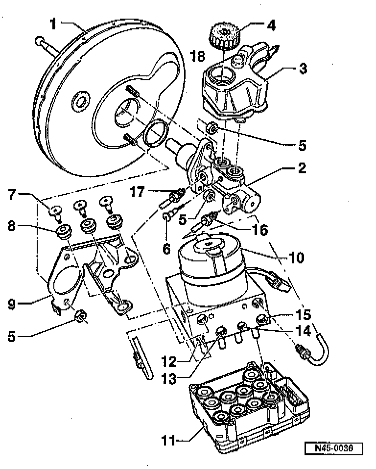

Hydraulic System: Diagrams
ABS, ABS/EDL Components:

Legend
1. Brake Servo (vacuum Brake Booster)
2. Brake Master Cylinder
3. Brake Fluid Reservoir
4. Cap
5. Self-locking Nut
6. Torx Socket-head Bolt
7. Torx Socket-head Bolt
9. Retainer
10. ABS Hydraulic Unit
11. ABS Control Module
12. Brake Line Connection
13. Brake Line Connection
14. Brake Line Connection
15. Brake Line Connection
16. Brake Line
17. Brake Line